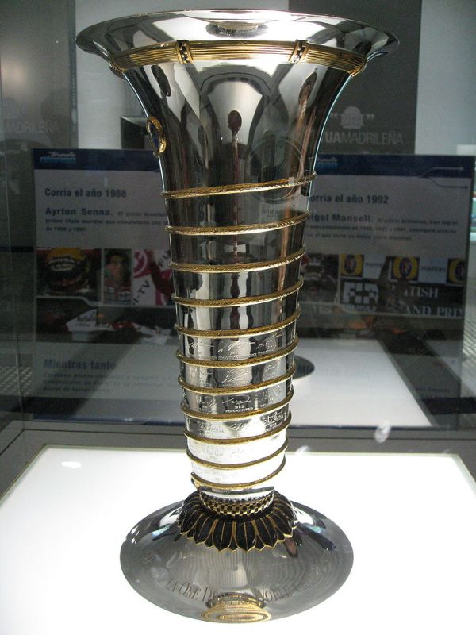

Чемпионы Формулы-1
 Титул чемпиона мира в классе «Формула-1» присуждается Международной автомобильной федерацией (фр. Fédération Internationale de l'Automobile — FIA) наиболее успешному гонщику «Формулы-1», набравшему наибольшее количество очков по итогам проводимых Гран-при. По регламенту 2005 года, если двое или более пилотов набрали одинаковое количество очков за все зачётные этапы чемпионата мира, то чемпионом признается спортсмен, одержавший наибольшее количество побед в сезоне. Если и количество побед одинаково, то рассматривают количество вторых мест, третьих и т. д. Первый чемпионат был проведён в 1950 году, и выиграл его Нино Фарина. Первым гонщиком, выигравшим несколько чемпионских титулов, стал Альберто Аскари, победивший в 1952 и 1953 годах.
FIA официально не объявляет чемпиона мира до окончания сезона, однако практически принято считать, что чемпион определился, когда другие гонщики даже теоретически не смогут набрать больше очков, чем данный пилот. Чемпион определялся в финальной гонке сезона в 23 сезонах из 56 проведённых. Раньше всего чемпион был определён в 2002 году, когда Михаэль Шумахер выиграл чемпионат за 6 гонок до его окончания.
Всего 33 гонщика выигрывали чемпионат, при этом немец Михаэль Шумахер является рекордсменом — он выиграл титул семь раз. Шумахер также является рекордсменом по количеству титулов, выигранных подряд — с 2000 по 2004 год. В настоящее время чемпионом мира является немец Нико Росберг, выигравший свой первый титул в 2016 году. Сразу после завоевания титула он объявил о завершении карьеры, поэтому в 2017 году впервые с 1994 года в чемпионате не будет участвовать действующий чемпион.
Все чемпионы Формулы-1
| Сезон | Чемпион | Команда |
|---|---|---|
| 1950 | Нино Фарина | Alfa Romeo |
| 1951 | Хуан Мануэль Фанхио | Alfa Romeo |
| 1952 | Альберто Аскари | Ferrari |
| 1953 | Альберто Аскари | Ferrari |
| 1954 | Хуан Мануэль Фанхио | Mercedes |
| 1955 | Хуан Мануэль Фанхио | Mercedes |
| 1956 | Хуан Мануэль Фанхио | Ferrari |
| 1957 | Хуан Мануэль Фанхио | Maserati |
| 1958 | Майк Хоторн | Ferrari |
| 1959 | Джек Брэбем | Cooper |
| 1960 | Джек Брэбем | Cooper |
| 1961 | Фил Хилл | Ferrari |
| 1962 | Грэм Хилл | BRM |
| 1963 | Джим Кларк | Lotus |
| 1964 | Джон Сёртис | Ferrari |
| 1965 | Джим Кларк | Lotus |
| 1966 | Джек Брэбем | Brabham |
| 1967 | Денни Хьюм | Brabham |
| 1968 | Грэм Хилл | Lotus |
| 1969 | Джеки Стюарт | Matra |
| 1970 | Йохен Риндт | Lotus |
| 1971 | Джеки Стюарт | Tyrrell |
| 1972 | Эмерсон Фиттипальди | Lotus |
| 1973 | Джеки Стюарт | Tyrrell |
| 1974 | Эмерсон Фиттипальди | McLaren |
| 1975 | Ники Лауда | Ferrari |
| 1976 | Джеймс Хант | McLaren |
| 1977 | Ники Лауда | Ferrari |
| 1978 | Марио Андретти | Lotus |
| 1979 | Джоди Шектер | Ferrari |
| 1980 | Алан Джонс | Williams |
| 1981 | Нельсон Пике | Brabham |
| 1982 | Кеке Росберг | Williams |
| 1983 | Нельсон Пике | Brabham |
| 1984 | Ники Лауда | McLaren |
| 1985 | Ален Прост | McLaren |
| 1986 | Ален Прост | McLaren |
| 1987 | Нельсон Пике | Williams |
| 1988 | Айртон Сенна | McLaren |
| 1989 | Ален Прост | McLaren |
| 1990 | Айртон Сенна | McLaren |
| 1991 | Айртон Сенна | McLaren |
| 1992 | Найджел Мэнселл | Williams |
| 1993 | Ален Прост | Williams |
| 1994 | Михаэль Шумахер | Benetton |
| 1995 | Михаэль Шумахер | Benetton |
| 1996 | Деймон Хилл | Williams |
| 1997 | Жак Вильнёв | Williams |
| 1998 | Мика Хаккинен | McLaren |
| 1999 | Мика Хаккинен | McLaren |
| 2000 | Михаэль Шумахер | Ferrari |
| 2001 | Михаэль Шумахер | Ferrari |
| 2002 | Михаэль Шумахер | Ferrari |
| 2003 | Михаэль Шумахер | Ferrari |
| 2004 | Михаэль Шумахер | Ferrari |
| 2005 | Фернандо Алонсо | Renault |
| 2006 | Фернандо Алонсо | Renault |
| 2007 | Кими Райкконен | Ferrari |
| 2008 | Льюис Хэмилтон | McLaren |
| 2009 | Дженсон Баттон | Brawn GP |
| 2010 | Себастьян Феттель | Red Bull Racing |
| 2011 | Себастьян Феттель | Red Bull Racing |
| 2012 | Себастьян Феттель | Red Bull Racing |
| 2013 | Себастьян Феттель | Red Bull Racing |
| 2014 | Льюис Хэмилтон | Mercedes |
| 2015 | Льюис Хэмилтон | Mercedes |
| 2016 | Нико Росберг | Mercedes |